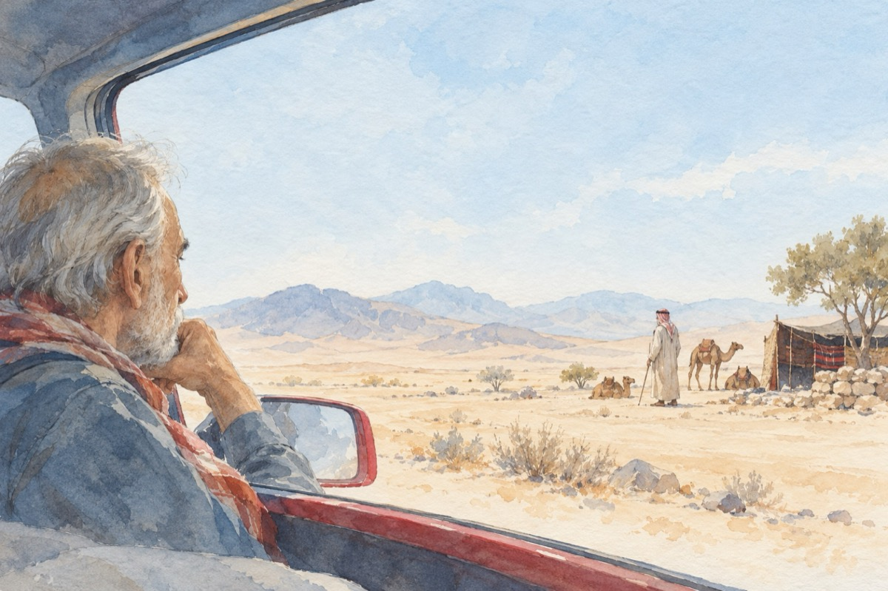

Sunt pașă, neam de beduin
În vizită în „țara” beduinilor.
Am fost și eu ca toți copiii
Cum toți copiii sunt zglobii
Am fost cowboy și poate și bandit
Dar nicicum nu m-am gândit
De toate-am fost, dar nu nebun
Să cred că în real există-un beduin!
Credeam că totu-i o poveste
De-a lui Coșbuc, un vechi străbun
Care știu eu, ne-a dat de veste
Cum Făt-Frumos sau un Păcală
Ar exista și-un beduin!
Acum, acum la bătrânețe
Sunt în mașină oameni buni
Și-s stăpânit de-a mea tristețe
Că trec prin „țara” lor de beduini!
Și sunt închiși în falsul modernism
Nescoși din vechiul lor mod-rok
O fi din răutate sau cinism
Poate nu vor sau n-au avut noroc
Să fie cu civilizația acolo la un loc!
Vasile Groza